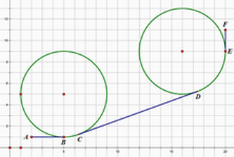

BZPRO
#4739. 定向越野
内存限制：512 MiB
时间限制：80 Sec
提交
提交记录
讨论
题目描述
定向越野是一项集智力与体力为一体的体育运动，在这项活动中，选手需要从起点出发，在尽可能短的时间内到达
指定的地点。牛牛非常喜爱这项运动，但是他不知道怎么样才能更快到达终点。他听说来参加集训的你智力过人，
于是他把定向越野的地图交给了你，希望你帮他解决一些问题。牛牛给你的地图描述的是一块平地，地图上不仅清
楚地标出了起点和终点的坐标，还标有若干个互不相交圆形区域，每个区域表示一个圆形的水域。对于不会游泳的
牛牛来说，进入水域是根本不可能的。因此，牛牛的行动路线不能从水域中穿过。牛牛想知道这样的路线长度最小
可以是多少。特别地，我们认为如果两个圆形水域相切，牛牛能够从中间经过。
输入格式
第一行包含四个实数Sx,Sy,Tx,Ty，分别表示起点的x,y坐标和终点的x,y坐标。
第二行包含一个正整数n，表示水域的个数。
接下来n行，每行3个整数xi,yi,ri表示一片水域的圆心的x,y坐标和半径。
n≤500，-1000≤xi,yi,ri,Sx,Sy,Tx,Ty≤1000，保证起点和终点都不在水域的内部或边界上，起点和终点不重合
输出格式
输出一行，包含一个实数，四舍五入精确到小数点后恰好1位，表示答案。你的输出必须和标准输出完全一样才算正确。
测试数据保证四舍五入后的答案和准确答案的差的绝对值不大于4×10^(-2)。
（浮点误差即对于大多数的算法，你可以正常地使用浮点数类型而不用对它进行特殊的处理）
样例
样例输入
2 1 20 11
2
5 5 4
16 9 4
样例输出
23.0
数据范围与提示
